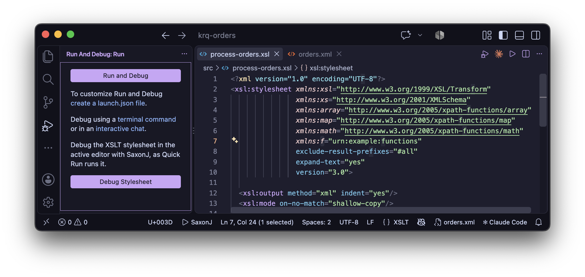
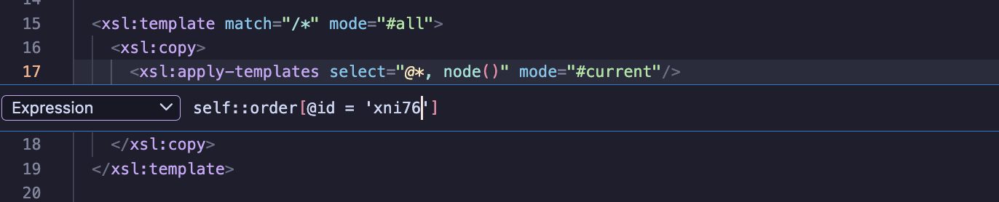
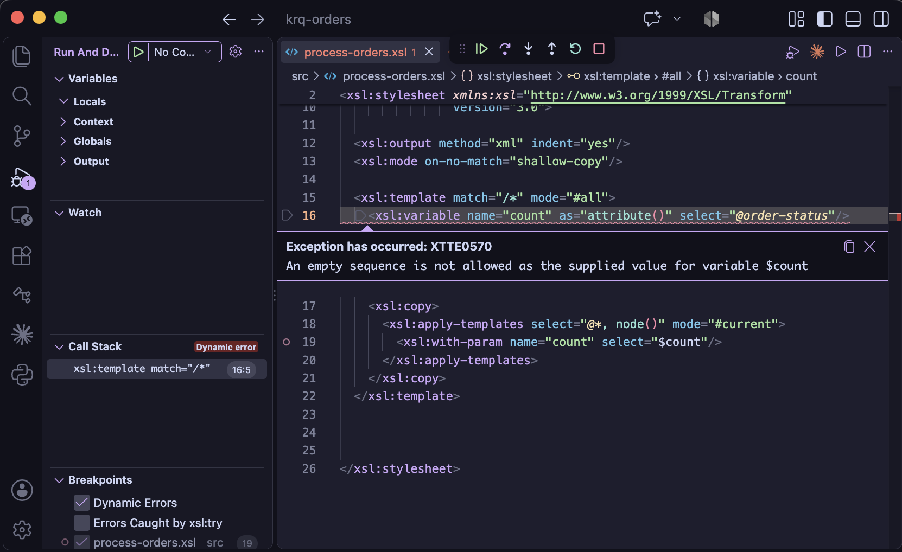

Debugger
XSLT stylesheets can be debugged with SaxonJ in VS Code's debugger: set breakpoints, step through templates, functions and multi-line XPath expressions, and inspect variables, the context item and the output written so far.
If you're new to debugging in VS Code, see Debugging in the VS Code documentation for the debug toolbar, views and keyboard shortcuts.
For debugging by adding xsl:message instructions to the stylesheet, see
Print Debugging.
Starting a debug session
Open the stylesheet and set a breakpoint - click in the margin to the left of a line number, or press F9. Then start debugging in any of these ways:
- the Debug Stylesheet with SaxonJ button in the editor title bar
- XSLT: Debug Stylesheet with SaxonJ from the Command Palette
- F5, when there's no
launch.json- or the Debug Stylesheet link in the Run and Debug view
The stylesheet runs as Quick Run runs it: with the XML context file, or
from xsl:initial-template when there's no context file. It uses the same Quick Run task, so
parameters added to that task also apply when debugging - if there's more than one task for the
stylesheet and context file, you pick which. When the stylesheet is imported or included by another,
you're offered the choice of running the parent stylesheet instead.
A Quick Run task includes the stylesheet's required
parameters, with values from tasks.json inputs. You're asked for these values when the
debug session starts, as when the task runs. If a task refers to an input that tasks.json
doesn't define, the session doesn't start, and you're offered Open tasks.json.

The Run and Debug View provides options for how to launch the debugger.
Launch configurations
With no launch.json, the Run and Debug view offers Debug Active
Stylesheet, and a Debug task label configuration for each
xslt task in tasks.json (see Tasks).
create a launch.json file adds these to a new launch.json.
To debug a task without a launch.json, choose XSLT (Saxon)... in the
Run and Debug view's dropdown, or use Debug: Select and Start Debugging
from the Command Palette, then the task's Debug task label. The configuration
stays selected in the dropdown, so F5 debugs that task again - whichever
file is open.
A launch configuration uses the xslt-saxon debugger type, with one of:
"quickRun": true- the stylesheet in the active editor, as Quick Run runs it"task"- the label of anxslttask intasks.json, whose properties are used; properties set in the configuration override them- the same properties as an
xslttask, such asxsltFile,xmlSource,initialTemplate,resultPathandparameters
{
"type": "xslt-saxon",
"request": "launch",
"name": "Debug report",
"task": "report with books.xml",
"stopOnEntry": false
}
"stopOnEntry": true pauses at the first instruction executed. In launch.json,
Add Configuration... offers four snippets: XSLT (Saxon): Debug Active
Stylesheet, Debug a Task, Debug Stylesheet (with a source
file) and Debug from Initial Template. See
Debug configuration
in the VS Code documentation for more on launch.json.
Breakpoints
A breakpoint can be set on a line where an XSLT instruction or a literal result element starts. A breakpoint anywhere in a multi-line start tag is moved to the tag's first line.
Breakpoints can also be set inside a multi-line XPath expression - see Stepping through XPath.
Conditional breakpoints, hit counts and logpoints
Right-click in the margin and choose Add Conditional Breakpoint... or Add Logpoint... - or right-click an existing breakpoint and choose Edit Breakpoint:
- Expression - an XPath expression, evaluated where the breakpoint is, with its
variables and context item, e.g.
@customer = 'Grace'or$total gt 30. If the expression raises an error, execution pauses and the error is shown. - Hit Count -
5or==5(the 5th hit),>5,>=5,<5,<=5or%5(every 5th hit). With an expression too, only the hits where the expression is true are counted. - Log Message - a logpoint writes the message to the Debug Console without
pausing. Each
{xpath}in the message is replaced by its value, e.g.{$line/@product} costs {f:line-total($line)}.

Setting a conditional breakpoint with an XPath expression.
Function and named-template breakpoints
To stop whenever a stylesheet function or named template is called, without finding where it's declared, click + (Add Function Breakpoint) in the Breakpoints view and enter its name. The function or template can be in any module of the stylesheet, including imported and included modules. Execution stops at the start of the function or template, where the Variables view shows its parameters - for a named template, these are the values passed to it.
- The name is written as it is where the function or template is declared, with
the same prefix, e.g.
f:totalorcell- or as an EQName, e.g.Q{urn:f}total. A()after the name is allowed. - An arity selects one version of a function, e.g.
f:total#2. With no arity, every version of the function stops. - Conditions and hit counts work as for line breakpoints - right-click the
breakpoint and choose Edit Condition or Edit Hit Count. The
condition can use the parameters, e.g.
$n = 2.
A name that isn't valid is shown as unverified straight away. A function or template that isn't in the
stylesheet - or a function with no version of the arity given - is shown as unverified once the
stylesheet has compiled; hover over the breakpoint for the reason. Template rules - templates with a
match attribute - aren't stopped at this way, even when they also have a
name: use a line breakpoint instead.
Pausing on errors
The Breakpoints view has two options for errors:
- Dynamic Errors (on by default) - pauses where a dynamic error that ends the
transform is raised, including
xsl:messagewithterminate="yes". The error's code and message are shown, and the variables at that point can be inspected. - Errors Caught by xsl:try (off by default) - also pauses at errors that an
xsl:trycatches. This needs Saxon 12.5 or later.

The debugger paused on a dynamic error.
A static error - one Saxon finds when it compiles the stylesheet - can't be paused at, as the
stylesheet never runs. This includes a type error that Saxon can tell will always happen: for example,
an xsl:variable with as="xs:string" whose select is
count(...), which is always an xs:integer. The session then ends with a
notification that gives the first error and its line, and the errors are listed in the
Problems view.
Stepping
The debug toolbar has the usual Continue (F5), Step Over (F10), Step Into (F11), Step Out (⇧F11), Pause and Stop commands. In XSLT terms:
- Step Over goes to the next line in the current template or function, without
stopping in the templates and functions it calls - for example, with
xsl:apply-templatesorxsl:call-template. - Step Into stops in each template rule, named template or function called, and in a global variable when it's evaluated.
- Step Out continues until the current template or function returns.
- The bodies of
xsl:for-each,xsl:for-each-groupandxsl:iterateare stepped through, not over, for each item.
Stepping goes line by line: execution stops once each time it reaches a line, not once for each instruction on it. A breakpoint in a loop stops once for each iteration.
Stepping through XPath
A multi-line XPath expression in a select, test or value
attribute - or in xsl:map-entry's key, xsl:evaluate's
xpath, context-item or with-params, or the content of an XSLT
4.0 xsl:select - can be stepped through. An xsl:when's test is
stopped at where it's evaluated: only the tests reached, in order, until one is true. In XSLT 4.0, the
select of an xsl:when or xsl:otherwise, and an
xsl:if's then and else, are stepped through only when that branch
is taken; an xsl:record's attributes - its fields' expressions - are stepped through as the
record is built. Within
xsl:catch, the $err: variables can be used, as in Watch. An xsl:with-param's select is stepped through as part of the
instruction it's in, e.g. xsl:call-template. An xsl:sort's
select is stopped at for each item, as its sort key is computed - before the first item
is processed - with that item as the context item. Use Step Into at the instruction, or set a
breakpoint on a line of the expression. Execution stops on each line where a part of the expression
starts. A breakpoint on a line with only keywords such as then, else or
return, and no expression starting on it, is unverified.
Step Into goes through an expression when that shows more than its result: when it
binds variables (for, let, some or every), calls a
stylesheet function or an inline function, or has an if whose branches are on lines of their
own - execution then stops at the branch taken. Otherwise - for example, for comparisons joined by
or - Step Into steps over it, and the variable's value is shown when it's
in scope. A breakpoint on a line of the expression still stops there.
A simple map (!), a path step (/) or a predicate ([...]) is
evaluated for each item of the expression before it. A breakpoint on a line of its right-hand side, or
predicate, stops for each item, with that item as the context item and its position() and
last() in the Context section. Step Into goes through such
a loop only when what's evaluated for each item has something to show, as above - e.g. a function
call - so that it doesn't stop for each item of a long path. A function argument that Saxon evaluates
lazily - within the function, when it's first used - shows its context item, but
position() and last() as (not known).
The expression is evaluated separately, in the instruction's context, so that each part reports its
own line. It appears in the call stack as, for example, xsl:variable/@select (XPath), and
its result is shown in the Debug Console, e.g. ▸ $line-totals (xsl:variable/@select, lines
25-28) returned (6.75, 10.8, 15.75) - or the dynamic error it raised, e.g. one an
xsl:try catches. The instruction itself then runs as usual, but without stopping again in
the functions the expression calls, or writing their xsl:message output again - so each is
stopped in, and its messages written, once. The body of an
inline function is stepped through each time it's called - for example, by
fold-left().

Evaluation context and call stack in the Run and Debug view when execution is paused.
Call stack
The Call Stack view has a frame for each:
- template rule, with its match pattern and mode, e.g.
xsl:template match="order" mode="summary" - named template, e.g.
xsl:template name="header" - function, by name and arity, e.g.
f:line-total#1 - global variable or parameter being evaluated, e.g.
xsl:variable $orders xsl:for-each,xsl:for-each-group,xsl:iterateorxsl:analyze-stringinstruction, with itsselectexpression- XPath expression being stepped through, e.g.
xsl:variable/@select (XPath)
Selecting a frame shows its location in the editor, and its variables in the Variables view.
Variables
The Variables view has four sections:
- Locals - the parameters of the template, function or
xsl:iterate, then the variables in scope - fromxsl:variable, and from XPathfor,let,someandeveryexpressions, including a positionalat $posvariable. Tunnel parameters are shown as$name (tunnel). A value that Saxon hasn't evaluated yet, and whose evaluation would run stylesheet code - for example, with Saxon 12, the accumulator passed to afold-leftfunction - is shown as(not evaluated yet), with a button to evaluate it. Evaluating it runs that code straight away, without stopping at its breakpoints. Inside an inline function, only the function's parameters, the variables from outside it that it uses, and its own range variables are shown. - Context - the context item (
.),position()andlast(), and where they apply,current-group(),current-grouping-key()and eachregex-group(). - Globals - the global variables and parameters, sorted by name. A global variable
that hasn't been used yet is evaluated when it's shown. While a global variable is being
evaluated, one that might use it - directly, or through a function - isn't evaluated, and is shown
as
(not evaluated yet): evaluating it would be a circular reference. - Output - which result is being written to, or that a temporary tree is being built
(for example, an
xsl:variable's content), and the end of each output written so far.
Nodes, maps, arrays and sequences can be expanded. An element shows its attributes, then its child nodes, with the line number of the element in its source document. Long values are truncated, and an expanded value shows at most 1000 items.
Inline values
While paused, the value of each variable declared earlier in the current template or function is shown
at the end of the line where it's declared. This applies to xsl:variable and
xsl:param, and in XPath, to let, for, some and
every variables and inline function parameters. The VS Code setting
debug.inlineValues turns this off.
Watch, hover and the Debug Console
While paused, type an XPath expression at the prompt at the bottom of the Debug
Console and press Enter to evaluate it - for example,
line[@qty gt 1]/@product on an order element, or
count(current-group()) in xsl:for-each-group. Expressions added to the
Watch view are evaluated in the same way, and again each time execution pauses.
Expressions are evaluated in the context of the call stack frame selected in the Call Stack view, with:
- the variables in scope, and the context item
- the stylesheet's namespace declarations and functions, e.g.
f:line-total($line) current(),current-group(),current-grouping-key()andregex-group(), which give their values where execution is paused
Results are shown, and can be expanded, as in the Variables view. Hovering over a variable reference
such as $total, or the name in a variable declaration, shows its value.
Output while debugging
The output written so far - the principal result, and each xsl:result-document - can be
shown beside the stylesheet while paused, and is updated at each pause. It's serialized by Saxon as the
result is, but indented for readability, and shown in the language of its output method: XML, HTML, JSON
or plain text. The result itself is written as the stylesheet specifies.
- XSLT: Show Debug Output, or its button on the debug toolbar, opens the output at any time - the output being written to, or, when none is and there's more than one, the one you choose.
- To open the output automatically, at the first pause where there is some, turn on the
XSLT.debug.openOutputsetting - it's off by default. - Show Output, on the context menu of an output in the Variables view's Output section, opens that output.
xsl:messageoutput, and the result when there's noresultPath, are written to the Debug Console.
XML output can be traced back to the stylesheet. With the cursor on a line of the output, a hint at the
end of the line - e.g. → report.xsl:4 - shows where that part of the output was written.
To go there, use Go to XSLT Source on the output's context menu,
Cmd/Ctrl-click, or F12 - or
Option/Alt-click, when editor.multiCursorModifier is
ctrlCmd. The stylesheet is shown in another editor group from the output's. For HTML, JSON
or text output, Go to XSLT Source reports that only XML output can be traced back to
the stylesheet.
When the session ends, a notification offers to Open the result file - or, for HTML, to Open in Browser.
Saxon errors
Saxon's error messages in the Debug Console are linked to the location of the error. The errors are also listed in the Problems view, as for XSLT tasks. A file's errors are removed from the Problems view when the file is edited, as they may no longer apply.
When the transform fails, the notification at the end of the session gives Saxon's reason - for example, that the XML source file doesn't exist - or, for a dynamic error, its message, code and line. For a stylesheet with static errors, which can't be debugged, it gives the first of them.
Sample: stepping through XPath
The debugger-demo
sample has a stylesheet, debug-xpath.xsl, and an XML file, orders.xml. Open
orders.xml, so it becomes the XML context file, then debug-xpath.xsl, and
start debugging. Things to try are listed in a comment at the top of the stylesheet, including:
- stepping through a multi-line
for ... returnexpression, and into a function it calls - a breakpoint inside an expression in
xsl:for-each-group, withcount(current-group())in the Watch view - conditional breakpoints, hit counts and a logpoint
- pausing at a dynamic error, after changing a price in
orders.xmlton/a
Limitations
- For debugging, the stylesheet is compiled without optimization, so all variables can be inspected. Saxon
still evaluates constant expressions when it compiles - e.g. an
xsl:ifwhose test uses only constant values - and an instruction removed that way can't be stopped at. - Values can't be changed in the Variables view.
- An expression that's stepped through is evaluated in full - except a test, e.g. an
xsl:if's, which is evaluated only as far as needed for true or false, as Saxon does. Where Saxon itself would evaluate only part of it - e.g. anxsl:iterate'sselect, whenxsl:breakends the loop, or a variable that's only partly used - stepping through it can call more functions, and so write morexsl:messageoutput, than a normal run. - With
"messageEscaping": "on"in thexslttask, Saxon writesxsl:messageoutput itself, so a message from a function called by an expression that's stepped through is written twice: once as the expression is stepped through, and again as the instruction runs. - Only modules loaded from files can be stopped in.
- Saxon only evaluates
xsl:assertwith assertions enabled -"enableAssertions": "on"in thexslttask - so without that, its breakpoints are unverified. - Saxon evaluates some instructions lazily - e.g. an
xsl:for-eachin anxsl:mapruns when the map is built - so the call stack may not show them while their content is stopped in. The context item is still the right one. - Accumulators: Saxon computes an accumulator's values for the whole document the first time one of
them is needed - e.g. by
accumulator-before()- so a breakpoint in anxsl:accumulator-rulestops for each node in turn at that point, not as each node is processed. If a breakpoint condition or a Watch expression is the first to need the values, they're computed while it's evaluated, and the rule's breakpoints aren't stopped at. Accumulator rules are reported to the debugger by Saxon 12.8 or later. - Keys: Saxon builds a key's index for the whole document the first time
key()is called for it - so a breakpoint on anxsl:keystops for each node indexed at that point. As for accumulators, if a breakpoint condition or Watch expression is the first to need the index, it's built while that's evaluated, and the key's breakpoints aren't stopped at.
Troubleshooting
When a debug session doesn't start, a notification gives the reason, with a Show Output button - for example, when Java isn't on the PATH, the Saxon jar doesn't exist, or the Java runtime is too old for the Saxon jar.
The XSLT Debugger log, in the Output panel, shows how each session was launched: the Java command line, the Saxon product, the Java runtime and the Saxon options used.